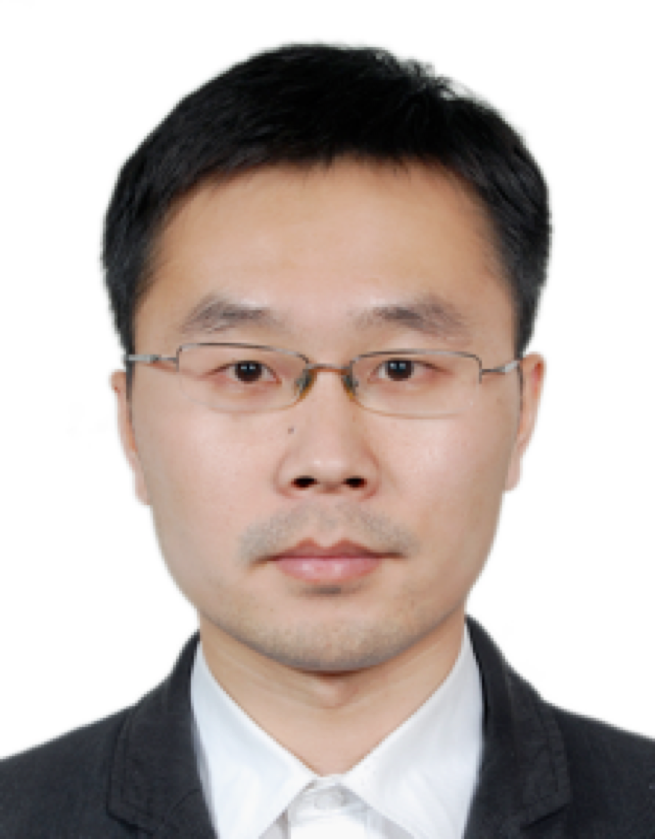

Associate Professor
Pervasive Interaction LabAddress: Room
3-526, Building FIT, Tsinghua University, Beijing 100084
Email: chunyu at
tsinghua dot edu dot cn
[35]. Yiqin Lu, Chun Yu*, Xin Yi, Yuanchun Shi, Shendong Zhao. BlindType: Eyes-Free Text Entry on Handheld Touchpad by Leveraging Thumbs' Muscle Memory. Ubicomp 2017
[34]. Xin Yi, Chun Yu*, Weinan Shi, Yuanchun Shi. Is it too small?: Investigating the performances and preferences of users when typing on tiny QWERTY keyboards. IJHCS 2017
[33]. Xin Yi, Chun Yu*, Weijie Xu, Xiaojun Bi, Yuanchun Shi. COMPASS: Rotational Keyboard on Non-Touch Smartwatches. CHI 2017, pp. 705-715 Honorable Mention Award (Top 5%)
[32]. Ke Sun, Yuntao Wang, Chun Yu*, Yukang Yan, Hongyi Wen, Yuanchun Shi. Float: One-Handed and Touch-Free Target Selection on Smartwatches. CHI 2017, pp. 692-704
[31]. Yeshuang Zhu, Yuntao Wang, Chun Yu*, Shaoyun Shi, Yankai Zhang, Shuang He, Peijun Zhao, Xiaojuan Ma, Yuanchun Shi. ViVo: Video-Augmented Dictionary for Vocabulary Learning. CHI 2017, pp. 5568-5579
[30]. Chun Yu, Yizheng Gu, Zhican Yang, Xin Yi, Yuanchun Shi. Tap, Dwell or Gesture?: Exploring Head-Based Text Entry Techniques for HMDs. CHI 2017, pp. 4479-4488
[29]. Xin Yi, Chun Yu*, Weinan Shi, Xiaojun Bi, Yuanchun Shi. Word Clarity as a Metric in Sampling Keyboard Test Sets. CHI 2017, pp. 4216-4228
[28]. Yeshuang Zhu, Shichao Yue, Chun Yu*, Yuanchun Shi. CEPT: Collaborative Editing Tool for Non-Native Authors. CSCW 2017, pp. 273-285
[27]. Chun Yu, Mingyuan Zhong, Xincheng Li, Peijun Zhao, Ke Sun, Yuanchunshi: One-Dimensional Handwriting: Inputting Letters and Words on Smart Glasses. CHI 2016, pp. 71-82
[26]. Chun Yu, Hongyi Wen, Wei Xiong, Xiaojun Bi, Yuanchun Shi: Investigating Effects of Post-selection feedback for Acquiring Ultra-Small Targets on Touchscreen. CHI 2016, pp. 4699-4710
[25]. Wenchang Xu, Chun Yu*, Jie Liu, Yuanchun Shi: RegionalSliding: Facilitating small target selection with marking menu for one-handed thumb use on touchscreen-based mobile devices. Pervasive and Mobile Computing 17: 63-78 (2015)
[24]. Jie Liu, Yongqiang Qin, Qiang Yang, Chun Yu, Yuanchun Shi: A Tabletop-Centric Smart Space for Emergency Response. IEEE Pervasive Computing 14(2): 32-40 (2015)
[23]. Yingxue Zhang, Siqi Liu, Lu Tao, Chun Yu*, Yuanchun Shi, Yingqing Xu, ChinAR: Facilitating Chinese Guqin Learning through Interactive Projected Augmentation. ChineseCHI 2015. Best Paper Award
[22]. Yongqiang Lyu, Xiaomin Luo, Jun Zhou, Chun Yu, Congcong Miao, Tong Wang, Yuanchun Shi, Ken-ichi Kameyama: Measuring Photoplethysmogram-Based Stress-Induced Vascular Response Index to Assess Cognitive Load and Stress. CHI 2015: 857-866 Honorable Mention Award (Top 5%)
[21]. Teng Li, Dangxiao Wang, Shusheng Zhang, Yuru Zhang, Chun Yu: Speed-accuracy tradeoff of controlling absolute magnitude of fingertip force. World Haptics 2015: 408-414
[20]. Xin Yi, Chun Yu*, Mingrui Zhang, Sida Gao, Ke Sun, Yuanchun Shi: ATK: Enabling Ten-Finger Freehand Typing in Air Based on 3D Hand Tracking Data. UIST 2015: 539-548
[19]. Yuntao Wang, Chun Yu*, Ling Du, Jin Huang, Y uanchun Shi. BodyRC: Exploring Interaction Modalities Using Human Body as Lossy Signal Transmission Medium UIC 2014: 260-267 Best Paper Award (Top 1%)
[18]. Yongqiang Lyu, Tianshu Yang, Xiaomin Luo, Chun Yu, Lei Wang, Yuanchun Shi: Quantitative Analysis of Mental Effort Investment using Photoplethysmogram. HEALTHINF 2014: 166-171
[17]. Jin Huang, Chun Yu*, Yuntao Wang, Yuhang Zhao, Siqi Liu, Chou Mo, Jie Liu, Lie Zhang, Yuanchun Shi: FOCUS: enhancing children's engagement in reading by using contextual BCI training sessions. CHI 2014: 1905-1908
[16]. Zhun Qu, Chun Yu, Yue Shi, Jin Huang, Li Tian, Yuanchun Shi: TangramTheatre: presenting children's creation on multimodal tabletops. CHI Extended Abstracts 2014: 2077-2082
[15]. Chun Yu, Ravin Balakrishnan, Ken Hinckley, Tomer Moscovich, Yuanchun Shi: Implicit bookmarking: Improving support for revisitation in within-document reading tasks. Int. J. Hum.-Comput. Stud. 71(3): 303-320 (2013)
[14]. Wenchang Xu, Chun Yu*, Songmin Zhao, Jie Liu, Yuanchun Shi: Facilitating parallel web browsing through multiple-page view. CHI 2013: 2167-2170 Honorable Mention Award (Top 5%)
[13]. Yuntao Wang, Chun Yu*, Jie Liu, Yuanchun Shi: Understanding performance of eyes-free, absolute position control on touchable mobile phones. Mobile HCI 2013: 79-88 Honorable Mention Award (Top 5%)
[12]. Yuntao Wang, Chun Yu, Yongqiang Qin, Dan Li, Yuanchun Shi: Exploring the effect of display size on pointing performance. ITS 2013: 389-392
[11]. Chun Yu, Yue Shi, Xinliang Wang, Yuanchun Shi:
Watching you moving the mouse, i know who you are. CHI Extended Abstracts 2012: 2661-2666
[10]. Jie Liu, Chun Yu, Wenchang Xu, Yuanchun Shi: Clustering web pages to facilitate revisitation on mobile devices. IUI 2012: 249-252
[9]. Wenchang Xu, Jie Liu, Chun Yu, Yuanchun Shi: Digging unintentional displacement for one-handed thumb use on touchscreen-based mobile devices. Mobile HCI 2012: 261-270
[8]. Haijun Xia, Jingning Zhang, Yeshuang Zhu, Chun Yu, Yuanchun Shi: Mobile assistant: enhancing desktop interaction using mobile phone. ITS 2012: 379-382
[7]. Wenchang Xu, Chun Yu, Yuanchun Shi: RegionalSliding: enhancing target selection on touchscreen-based mobile devices. CHI Extended Abstracts 2011: 1261-1266
[6]. Chenjun Wu, Yue Suo, Chun Yu, Yuanchun Shi, Yongqiang Qin: uPlatform: A Customizable Multi-user Windowing System for Interactive Tabletop. HCI (1) 2011: 507-516
[5]. Yu Zhong, Yue Suo, Wenchang Xu, Chun Yu, Xinwei Guo, Yuhang Zhao, Yuanchun Shi: Smart home on smart phone. Ubicomp 2011: 467-468
[4]. Chun Yu, Xu Tan, Yue Shi, Yuanchun Shi: Air finger: enabling multi-scale navigation by finger height above the surface. Ubicomp 2011: 495-496
[3]. Yongqiang Qin, Yuanchun Shi, Hao Jiang, Chun Yu: Structured laser pointer: enabling wrist-rolling movements as a new interactive dimension. AVI 2010: 163-166
[2] Yongqiang Qin, Chun Yu, Hao Jiang, Chenjun Wu, Yuanchun Shi: pPen: enabling authenticated pen and touch interaction on tabletop surfaces. ITS 2010: 283-284
[1]. Chun Yu, Yuanchun Shi, Ravin Balakrishnan, Xiangliang Meng, Yue Suo, Mingming Fan, Yongqiang Qin: The satellite cursor: achieving MAGIC pointing without gaze tracking using multiple cursors. UIST 2010: 163-172
| 2017 | CCF Young Talent Program | |
| 2017 | ACM CHI 2017 Honorable Mention Award | |
| 2016 | CCF-Intel Young Faculty Researcher Program | |
| 2016 | ACM CHI 2016 Honorable Mention Award | |
| 2015 | Advances of Science and Technology (2015), First Prize, Adiministration of Education, China | |
| 2015 | ACM CHI 2015 Honorable Mention Award | |
| 2014 | IEEE UIC 2014 Best Paper Award | |
| 2014 | Chinese CHI 2014 Best Paper Award | |
| 2013 | ACM CHI 2013 Honorable Mention Award | |
| 2013 | ACM MobileHCI 2013 Honorable Mention Award | |